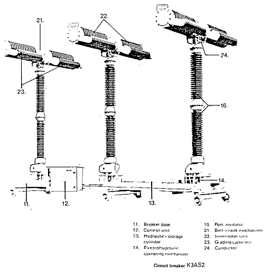
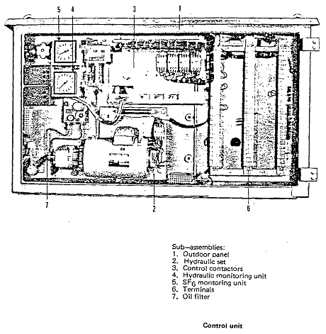
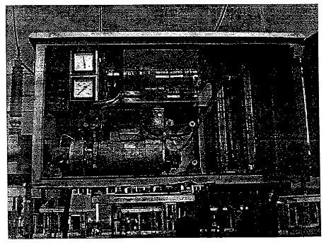
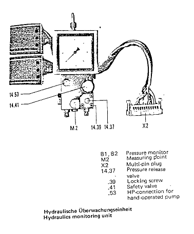
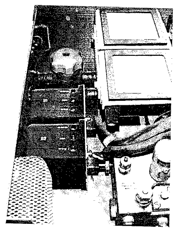
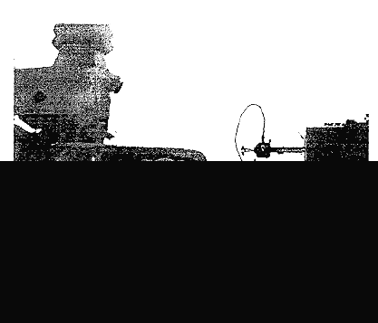
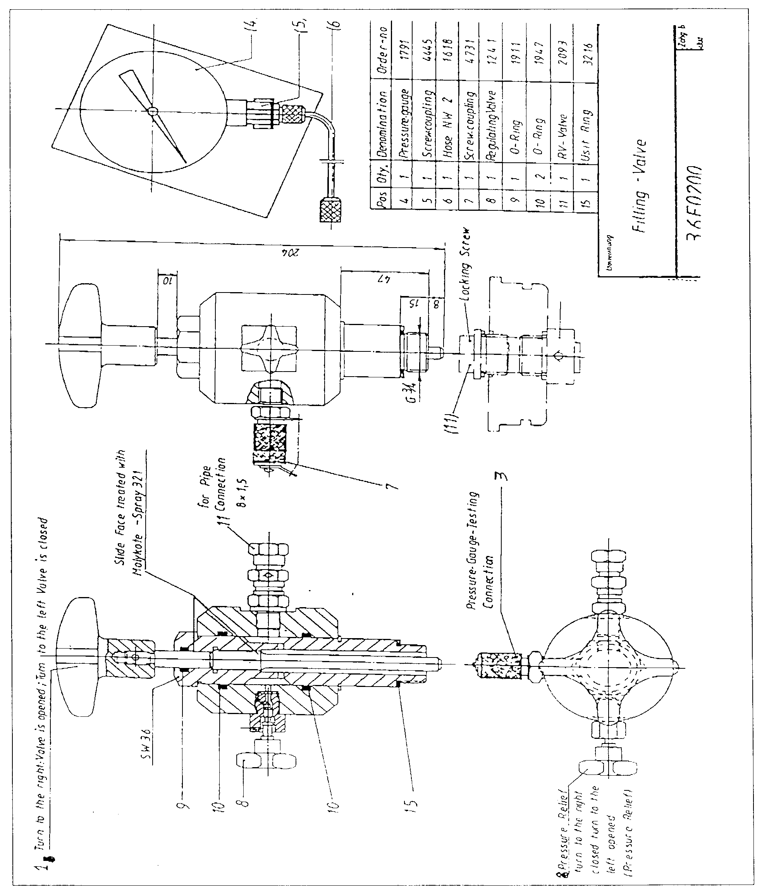

Substations Technical Procedure
SF6 CB 220KV
K3AS2
Rade Koncar
Measuring Nitrogen Pressure
Using Manometer
|
Substations Technical Procedure |
|
| Equipment: SF6 CB 220KV K3AS2 Rade Koncar |
Document No: CB-025-r0 | |
| Issued to: Networks | ||
| Status: APPROVED | ||
| Procedure: Measuring Nitrogen Pressure Using Manometer |
Date Approved: 23 Nov 1998 | |
| Review Date: Nov 2003 | ||
Introduction
The K3AS2 is a triple pole circuit breaker in outdoor design and uses Sulfur Hexa fluoride (SF6) as insulation and arc quenching medium. Each breaker pole has its own Electro-hydraulic operating mechanism so that the breaker is suitable for single pole and triple pole auto-reclosure.
Compressing nitrogen in a hydraulic storage cylinder arranged horizontally in the breaker base produces the mechanical energy. From the storage cylinder pipes run to the operating unit where the oil pressure is monitored and controlled.
Safety Precaution
A work permit must be issued and personnel carrying out the maintenance should be trained and qualified or directly supervised by some one who is.
Safety fence with caution marks around the work area is required.
Wear your safety helmet & safety harnesses is required.
CB most be isolated and proper earthing at the two sides.
Use only Fiber glass ladder .
Don't burn the cloth used in cleaning, collect it and send to the dump.
Tools and Equipment
Safety helmet, safety belt, and complete tool kit/set, including a torque wrench.
One
set of metric open end box wrenches one set of Allen keys and one set of
Screwdriver
Fiber glass ladder, Tin
cans to hold bolts, nuts, washers
…etc.
Thermometer, Calibrated Manometer
Work to be carried out
Open the door of the control unit Fig (1) and Fig. (2).
Stop the pump working by disconnect it from the power Supply.
Open the locking screw 14.39 Fig.3 using (Allen key 5)
Open the pressure release valve (1403 fig .3) slightly for venting the pressure in low rate to avoid flooding of oil in oil storage tank .
The pressure will decrease until the position from where the pointer of
the hydraulics monitoring unit Fig (3).jumps
to zero gives a reading of the
priming pressure of the nitrogen pressure.
For
Measuring the Nitrogen Pressure Using A Calibrated Manometer
Disconnect the cover over the two hydraulic cylinders.
Disconnect the side cover of the upper nitrogen cylinder by unscrewing 4 bolts (SP.19).
Disconnect the plug covering the non return valve of the cylinder under the side cover.
prepare the filling valve of nitrogen charging set (Fig.4) type (BSD) (Bolenz
& schafer. Maschinen fabrik).
Warning:
The Spindle (1fig4) must be screwed to the left up to stop to close it.
Pressure relief (8fig.4) must be tuned to the right up to stop to close it.
Screw in the filling valve of the nitrogen charging set in the same position of non return valve-plug (Fig.5) .
Connect the pressure gauge (4Fig.4) with hose to the filling calve
through the pressure gauge testing connection (3Fig.4) and (Fig.5).
Turn the spindle (5 Fig.4) to the right up to stop to open it the gas
pressure then can be read on the pressure gauge (4 Fig.4)
Too high pressure can be relieved by means of the
pressure relief (8Fig.4)
Before dismantling turn the spindle (5 Fig.4) at the filling valve to the
left up to stop.
Open pressure relief (8 Fig.4).
Waits until the system is without pressure and then
start loosen the connections.
Screws in the plug of non-return valve and cover
again.
Screw in the original locking screw of the filling
valve.
|  |
|
Figure 1 |
|  |
|
Figure 2 |

Figure 2

Figure 3

Figure 3

Figure 5

Figure 4
Location:
Equipment code:
Checked by:
Date:
Signature: